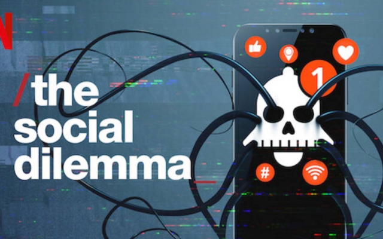
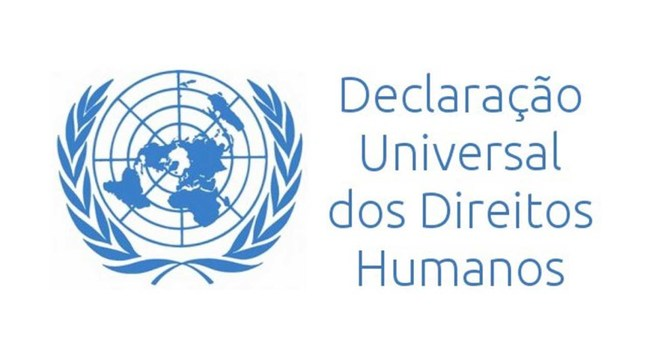

Um documentário que demonstra como somos manipulados pelas redes sociais, que foram criadas para nos prender cada vez mais e nos vicia, acarretando diversos malefícios.

Minha resenha:
Dilema das redes consegue mostrar os malefícios das redes sociais, como ela nos manipulam e,
basicamente, tem a capacidade de destruir a sociedade.
Enquanto assistia, Diversas coisas ditas no documentário eu consegui me identificar, como por exemplo as
notificações persuasivas que eu acabo caindo e o hábito de sempre recarregar a linha do tempo (por exemplo
o Twitter), que foi enraizado pelo sistema persuasivo e que me faz buscar mais e mais informação, mesmo que
não seja garantida.
Também, é importante quando é dito que mesmo que convivem juntas quase o tempo inteiro e/ou que pessoas
da mesma casa, a linha do tempo das redes sociais dessas pessoas não são as mesmas. O sistema faz com que
tenha preferência por assuntos que você acompanha e repetirá isso para sempre. Então, não. A outra pessoa
muitas vezes não está vendo as mesmas coisas que você na internet.
Em um momento de horror devido às crueldades da Segunda Guerra Mundial, nasceu a Declaração Universal dos Direitos Humanos que tem como princípio básico: “todos os seres humanos nascem livres e iguais em dignidade e direitos”.
Artigo 4:
Ninguém será mantido em escravatura ou em servidão; a escravatura e o trato dos escravos,
sob todas as formas, são proibidos.
Artigo 5:
Ninguém será submetido a tortura nem a penas ou tratamentos cruéis, desumanos ou degradantes.
Artigo 6:
Todos os indivíduos têm direito de ser, em todos os lugares, reconhecidos como pessoa perante a lei.
Artigo 18:
Toda a pessoa tem direito à liberdade de pensamento, de consciência e de religião; este direito
implica a liberdade de mudar de religião ou de convicção, assim como a liberdade de manifestar
a religião ou convicção, sozinho ou em comum, tanto em público como em privado, pelo ensino, pela
prática, pelo culto e pelos ritos.